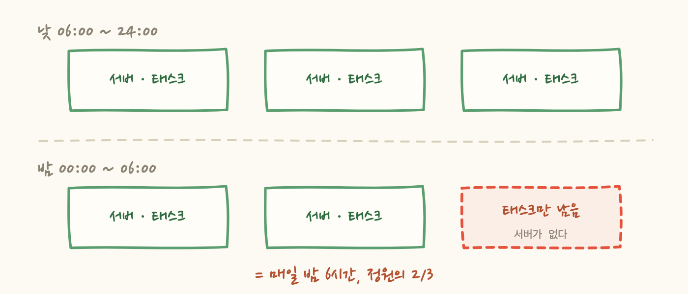
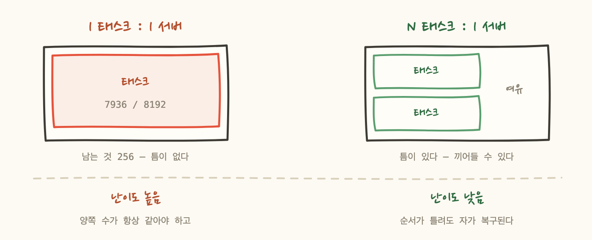
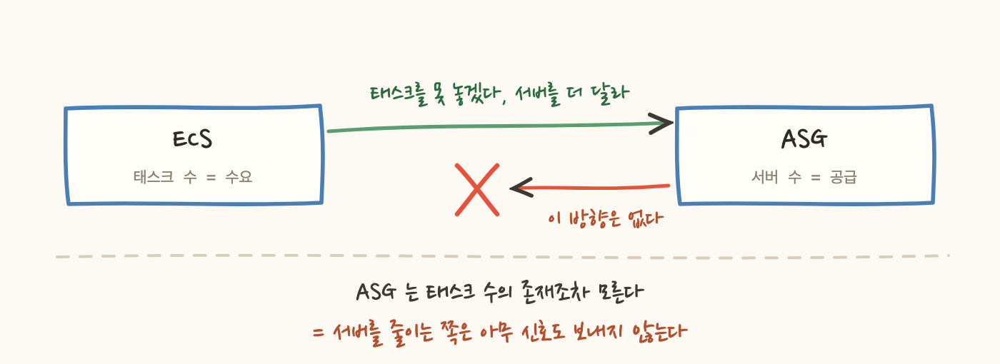

새벽 0시 8분에 Slack 카드가 떴어요.
이 알람은 전날 배포한 것이었습니다. 감지 체계를 만들면서 넣어둔 여러 룰 중 하나였고, 배포 16시간 만에 첫 실장애를 잡았어요.
그런데 확인해보니 이상했습니다. 5xx도 없고, 사용자 신고도 없고, 대시보드도 전부 초록불이었어요. 그런데 매일 밤 6시간씩, 정원의 2/3로 운영되고 있었습니다. 최소 4일째요.
야간에 EC2 비용을 줄이려고 ASG 예약 작업이 걸려 있었어요. 자정에 서버 3대 → 2대, 아침 6시에 2대 → 3대. 오래된 설정이고, 의도한 절감입니다.
문제는 서버만 줄고 ECS 태스크 수는 아무도 줄이지 않았다는 것이었어요. 태스크는 3개로 남아 있으니, 3번째가 갈 자리가 없습니다.

ECS 스케줄러는 "태스크 3개 유지"가 임무라서 포기하지 않고 계속 재시도해요. 자리가 없으니 계속 실패하고, 아침 6시에 서버가 돌아와야 비로소 채워집니다.
그리고 이 사고의 성질이 고약합니다. 서비스가 죽지 않아요. 축소된 상태로 계속 정상 응답하니 5xx도 없고 신고도 없습니다. 알람이 잡아주는 것 말고는 알아낼 방법이 없었어요.
실제로 어떤 밤이었는지 로그를 이어붙여 봤습니다.
이런 밤이 최소 4일 반복됐습니다. 정확히는 "최소"인데, ASG 활동 로그가 남아 있는 범위가 4일이라 그 이전은 확인할 방법이 없었어요.
처음 든 생각은 "한 대에 두 개 끼워 넣으면 되지 않나"였어요. 안 됩니다.
7936 = 8192 - 256은 우연으로 보이지 않아요. 서버 하나를 통째로 쓰도록 맞춘 값입니다. 즉 이 서비스는 태스크 1개 = 서버 1개 구조예요.
그리고 이 한 숫자가 이 문제의 난이도를 전부 결정합니다.

N:1이면 서버가 한 대 빠져도 남은 서버에 끼어들 틈이 있어요. 순서가 틀려도 알아서 복구됩니다. 1:1은 다릅니다. 양쪽 수가 항상 같아야 하고, 전환 순서까지 맞춰야 해요.
그러면 1:1을 없애면 되지 않나 싶었는데, 이 제약은 의도된 설계였습니다. 태스크를 서로 다른 서버에 강제로 흩어놓는 설정이 걸려 있었고, 목적이 분명해요 — 서버 하나가 죽어도 태스크 하나만 잃게 하려는 가용성 설계입니다. 존중해야 하는 제약이었습니다.
왜 이런 일이 생기나 보니, 두 시스템을 잇는 선이 한 방향밖에 없었습니다.

ECS에서 ASG로 가는 길은 있어요. 용량 공급자의 관리형 스케일링이 "태스크를 못 놓겠으니 서버를 더 달라"고 요청합니다. 반대 방향은 없습니다.
그래서 서버를 줄이는 사람에게 태스크 쪽이 보이지 않아요. 두 설정은 서로 다른 화면, 서로 다른 서비스, 서로 다른 API에 있습니다. 한쪽을 바꾸는 사람에게 다른 쪽이 보이지 않습니다.
이 사고를 조사하면서 제일 인상적이었던 게 이 부분이에요. 고장난 부품이 하나도 없습니다. ASG 예약도 정상, ECS 스케줄러도 정상, 용량 공급자도 정상. 결함은 잘못이 아니라 누락이었어요 — 둘을 잇는 선이 없었을 뿐입니다.
그런데 한 방향이라도 있으면 밤에 서버가 부족할 때 스스로 늘려주지 않을까요. 안 됩니다.
예약 작업이 MinSize = MaxSize로 고정하니, 관리형 스케일링이 요청해도 늘릴 수 없어요. 자동 조절 장치를 달아놓고 손으로 못 박아둔 상태입니다.
그러니 밤에는 유일한 자동 복구 경로마저 막혀 있었던 거죠. 6시간 동안 아무것도 이 상황을 스스로 해결할 수 없었습니다.
1:1 구조에서는 이게 항상 성립해야 해요.
그리고 이 등식을 검사하거나 강제하는 장치가 아무것도 없었습니다. 한쪽만 바뀌면 조용히 깨지고, 깨진 채로 며칠이 지나도 아무도 모릅니다. 이번에 정확히 그랬어요.
불변식을 지키는 방법은 세 단계로 강해집니다.
우리는 최소 단계에 있었고, 그마저도 양쪽 설정이 IaC 밖에 있었습니다. 콘솔과 CLI로만 존재하니 변경 이력도 리뷰도 없어요.